Hybrid reinforced concrete design
Hybrid reinforced concrete (HRC) is concrete reinforced with both continuous steel bars and short fibers mixed through the concrete. The fibers carry tension across cracks and share the load with the bars, so part of the bar reinforcement can be replaced. The group developed closed-form equations for the flexural design of hybrid sections and checked them against nine full-size beams tested in Brazil.
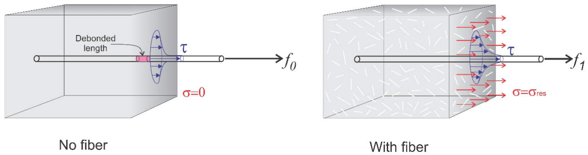
Fibers and reinforcing bars in one member
There are numerous advantages of using a fiber reinforced concrete system in applications such as elevated slabs, industrial floors, and structural thin sections. The key advantage is in the time reduction of the installation as the double layers of traditional rebars and stirrups can result in several weeks of construction time.
Many high reliability applications such as tunnel linings are reinforced only with fiber due to their economic benefits. Hybrid designs that utilize both steel fibers and rebar have demonstrated significant advantages in various structural applications.

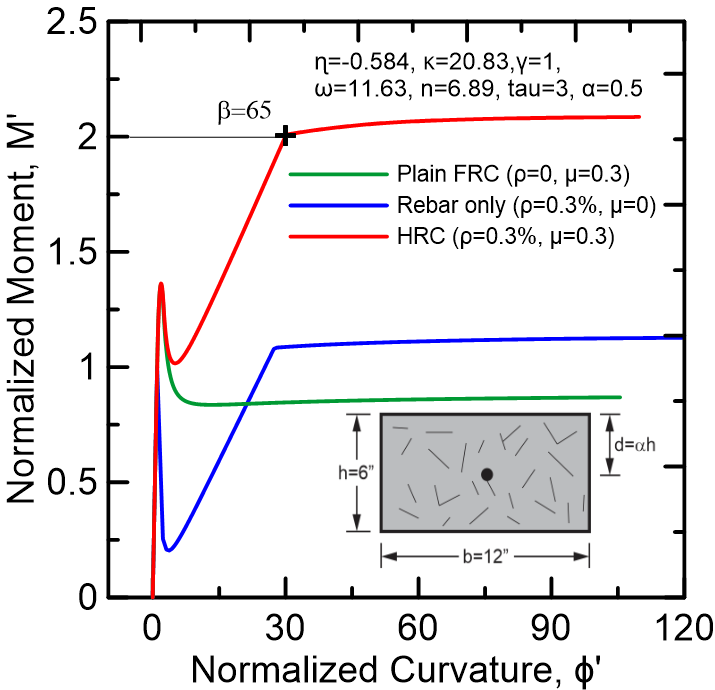
Cracked section with fibers
Conventional reinforced concrete design ignores the tensile strength of the concrete, so the bars are expected to carry all of the tension as soon as the concrete cracks. In a plain reinforced section the contribution of the concrete falls below 10% once cracking starts. Fibers bridge the crack and keep transmitting stress across it. This residual tensile strength lets the cracked concrete keep sharing the tension with the bars.
As the crack extends, the bridging delays the build-up of stress in the bar and its yielding. The cracked section is therefore stiffer under service loads, and the model below predicts smaller strains and crack widths at a given load.

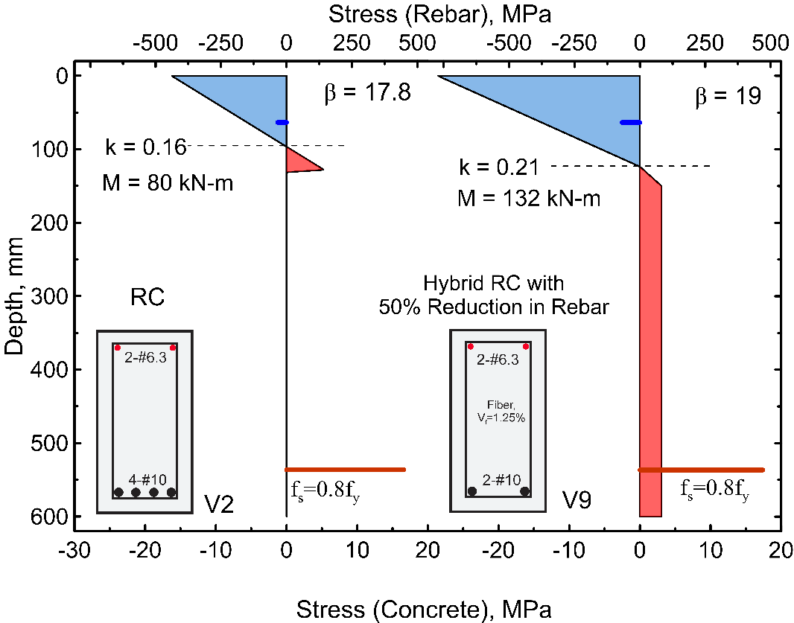
Closed-form moment-curvature model
Moment-curvature is the relation between the bending moment on a section and the curvature it produces. In the model developed by the group the concrete in tension, the concrete in compression and the steel are each described by a stress-strain law made of straight segments. The equilibrium of forces on the section can then be solved exactly, so the depth of the neutral axis, the moment and the curvature are each given by an equation.
The tensile strain at the bottom of the section is the independent variable. As it grows the section passes through stages such as cracking of the concrete and yielding of the bar, each with its own solution, and the response is the envelope of these solutions. Because the strain is followed through the whole loading, one model gives the load-deflection curve and serves both the serviceability checks on stress, strain, crack width and deflection and the check at ultimate load.
The 2023 paper unifies the earlier solutions of the group, among them a 2015 solution for hybrid steel fiber beams, under multilinear laws and reinforcement in different layers.

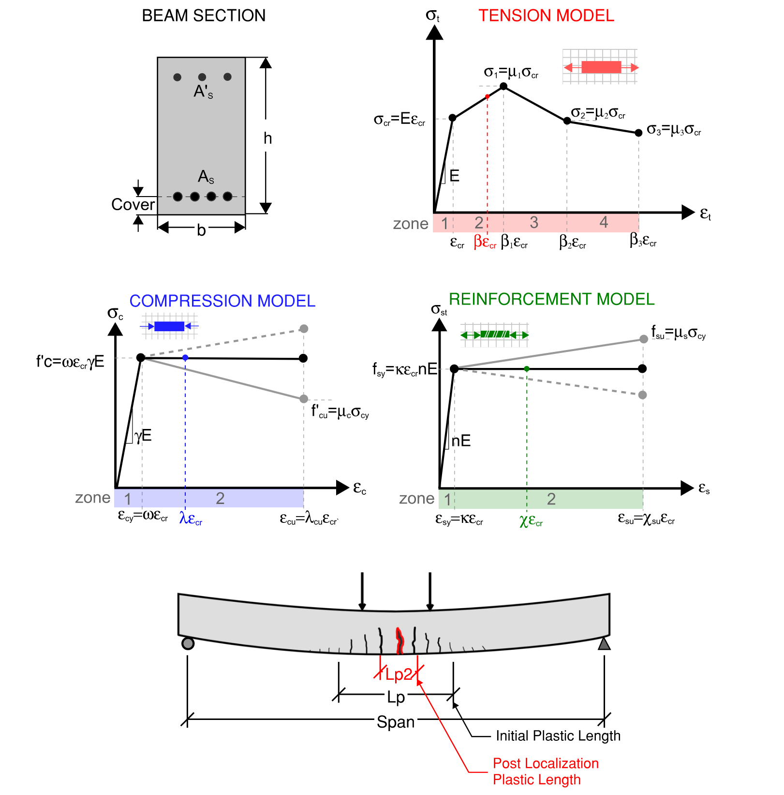

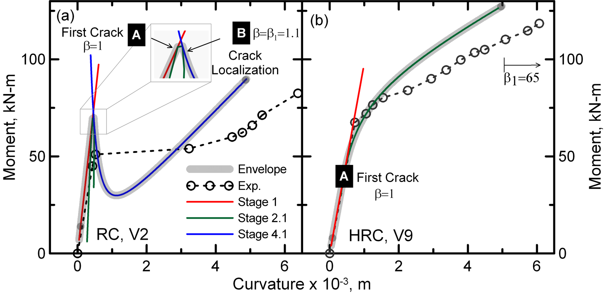

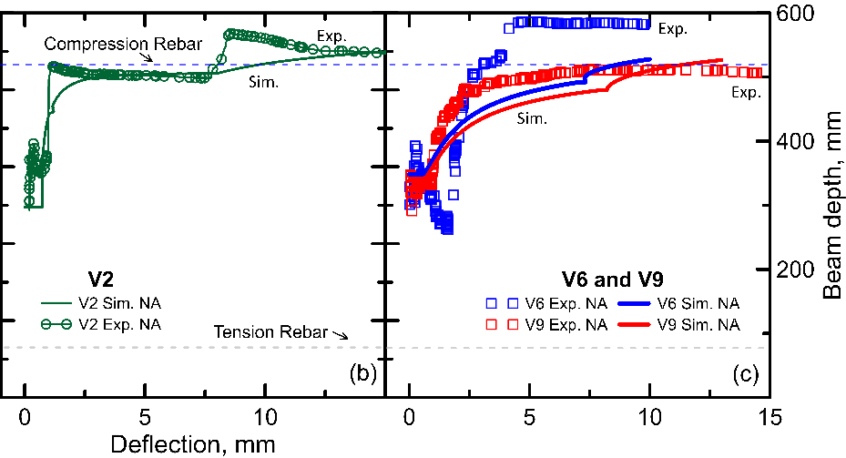
Beam tests in Brazil
The model was checked against nine beams tested in Brazil with the Federal University of Goiás, the Federal University of Rio de Janeiro and Furnas. Each beam was 600 mm deep, 200 mm wide and 4400 mm long and was loaded in four-point bending over a 4000 mm span. Beams V1 and V2 were conventional reinforced concrete. Beams V3 to V9 were hybrid, with 0.5 to 1.25% of hooked-end steel fibers by volume and 50 to 80% less flexural reinforcement, which left them below the minimum specified for a conventional beam.
The first-crack strength of the hybrid beams was 15 to 24% higher than that of the conventional beams, and at the same reinforcement ratio they were stiffer after cracking with fewer cracks and smaller deflections. With 50 to 80% of the longitudinal reinforcement replaced by 1.25% steel fibers, the moment capacity under service conditions rose by 43 to 65%, while the ultimate load fell by 10 to 50%.

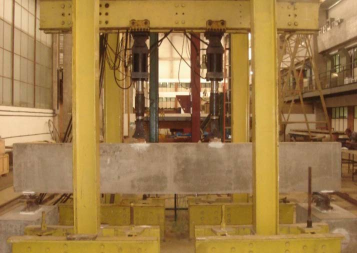


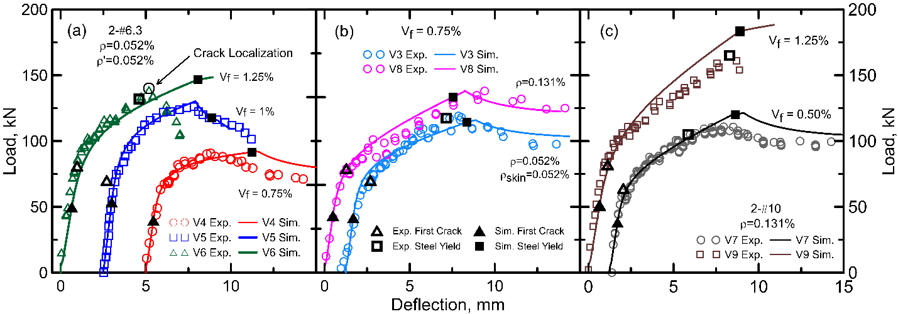
Load sharing between fibers and bars
In the conventional beams V1 and V2 the simulation gives an unstable response immediately after the first crack, which corresponds to the energy released as cracks grow in the concrete. In the hybrid beams V4 and V6 no sudden drop is observed, because the residual tensile strength of the fiber concrete shares the load after the first crack.
The closed-form solution gives the tensile and compressive force in each component at every load stage. Over the whole serviceability range, fiber bridging carried 74 to 92% of the tensile force in the cracked concrete, and the tension efficiency of the concrete rose by as much as 83%.

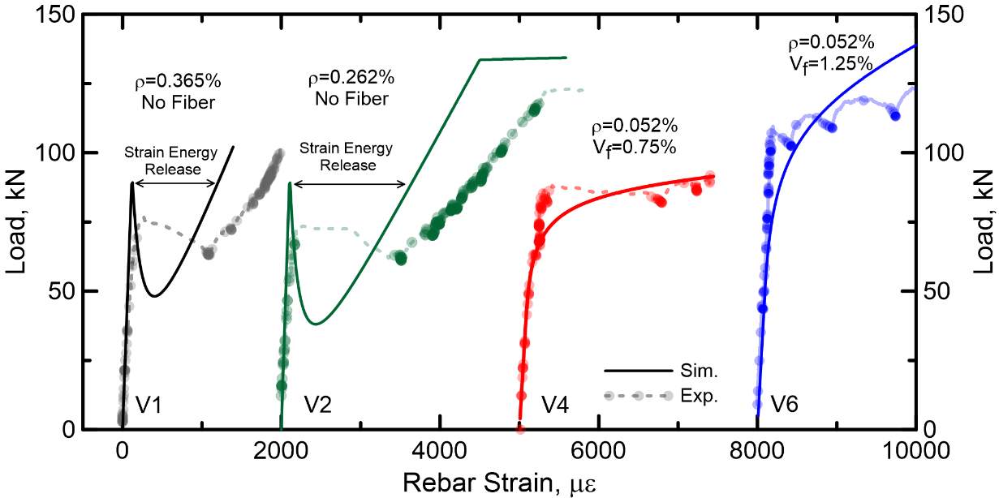

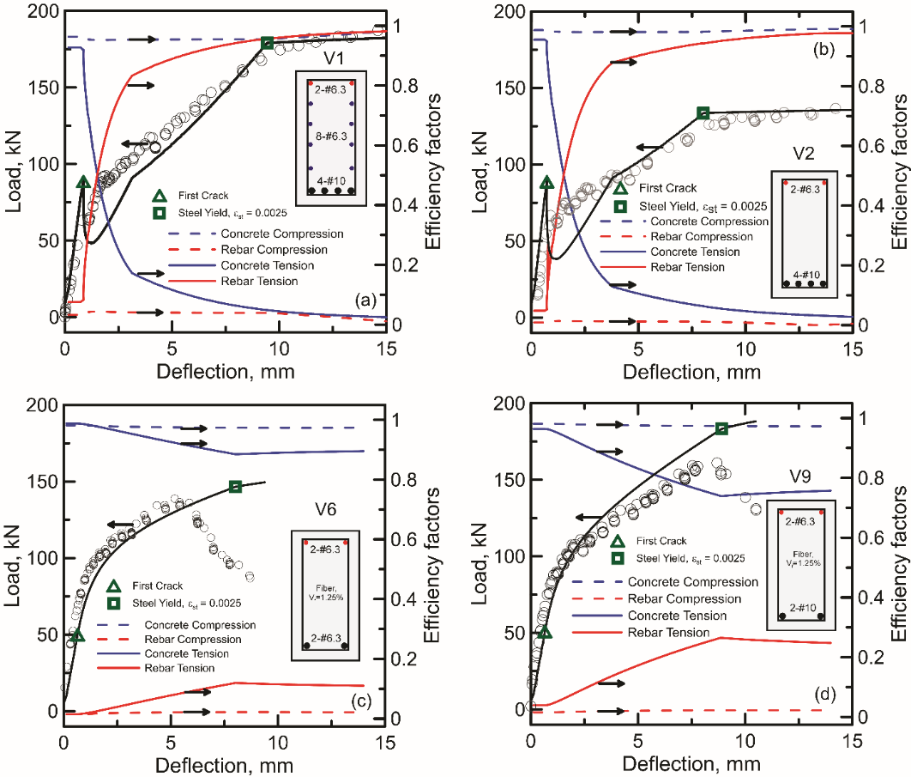
Ductility and minimum reinforcement
The fibers raise the stiffness after cracking and improve crack control, while the longitudinal reinforcement ratio governs the ultimate strength and the deformation capacity. At a fiber content of 0.75%, the beam with a reinforcement ratio of 0.131% reached a 32% higher ultimate load and a 56% larger ultimate deflection than the beam with 0.052%.
Ductility is the ratio of the deformation at failure to the deformation at yielding of the bars. At a constant reinforcement ratio, adding fibers reduced the deflection ductility. With a lower limit of 3.0 on this ratio, the conventional beams and the hybrid beams with up to 0.75% fibers were ductile. By the ductility requirements of the fib Model Code 2020, all hybrid beams with reinforcement ratios of 0.052 to 0.131% were ductile.
The 2023 model gives the minimum reinforcement ratio in closed form, as the amount of bar that keeps the ultimate moment above the first cracking moment. In its design chart this minimum is nearly zero at a residual tensile strength ratio of 0.34, where fibers may replace the continuous bars.

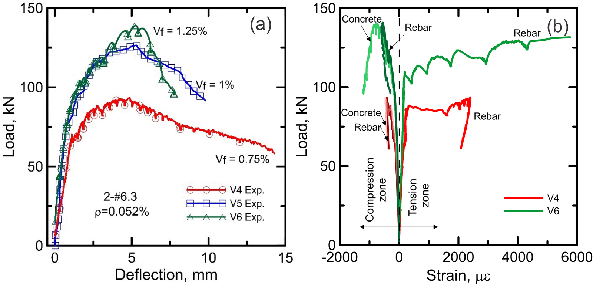

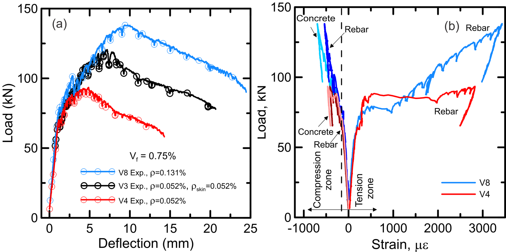
HRC Designer
The closed-form method is implemented in HRC Designer, the free software of the group for Windows. Its hybrid beam module takes the geometry, the reinforcement and the material laws and returns moment-curvature, load-deflection and the stress and force profiles through the depth. First crack, service stress in the bar, steel yield and compression yield of the concrete are marked on the curves. The equations are solved without iteration, so the results update as a value is typed.

Papers
All publicationsMechanism of tensile load sharing in hybrid reinforced concrete flexural members
Construction and Building Materials, 506, 144835
Efficiency of hybrid reinforced concrete beams with low reinforcement ratios
Materials and Structures, 58 (6), 218
Journal of Structural Engineering, ASCE, 149 (12), 04023188
@article{pleesudjai2023generalized,
author = {Pleesudjai, Chidchanok and Patel, Devansh Deepak and Mobasher, Barzin},
title = {Generalized Nonlinear Moment-Curvature Model for Serviceability-Based Design of Hybrid Reinforced Concrete},
journal = {Journal of Structural Engineering},
volume = {149},
number = {12},
pages = {04023188},
year = {2023},
doi = {10.1061/JSENDH.STENG-12235}
}
Analytical solutions for flexural design of hybrid steel fiber reinforced concrete beams
Engineering Structures, 100, 164-177
Experimental investigation of tension stiffening in hybrid reinforced concrete ties
Construction and Building Materials, 458, 139505
Limit-state based design of hybrid reinforced UHPC flexural beams using parametric modeling
Engineering Structures, 357, 122353
Generalized Nonlinear Moment-Curvature model for flexural fatigue of hybrid reinforced concrete beams
Engineering Structures, 345, 121539
Interaction diagrams for design of hybrid fiber-reinforced tunnel segments
Materials and Structures, 51
Closed-form solutions for flexural response of fiber-reinforced concrete beams
Journal of Engineering Mechanics, ASCE, 133 (8), 933-941
@article{soranakom2007closed,
author = {Soranakom, Chote and Mobasher, Barzin},
title = {Closed-form solutions for flexural response of fiber-reinforced concrete beams},
journal = {Journal of Engineering Mechanics},
volume = {133},
number = {8},
pages = {933--941},
year = {2007},
doi = {10.1061/(ASCE)0733-9399(2007)133:8(933)}
}